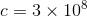
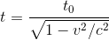
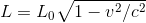
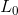
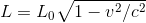
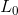
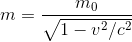
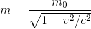

Einstein Stuff
|
Einstein is pretty simple if you aren’t working with systems that have acceleration in them. Simple enough that I can explain some of his laws within that constraint. Actually, the difference between special relativity and general relativity is that special relativity assumes no acceleration, while general relativity factors in acceleration. So special relativity is actually less special than general relativity. It just works for the special case that everything in a system is moving at constant velocity. (There also seems to be Doubly special relativity and de Sitter invariant special relativity, but I have no idea what the heck when it comes to those.) The first postulate of special relativity is that the speed of light, m/s, is the same for all inertial reference frames, which are reference frames that move at constant velocity. The second postulate of special relativity is that light moves at even if emitted from a moving source. And that’s it. It’s not like Newton's or Kepler’s Law’s where there’s a nice round 3 amount of laws. Just these two. There are weird things that happen with Time, Length, and Mass, but it’s not a part of either of these postulates. Yes, Time dilation happens when an observer observes an object moving at constant velocity. The observer will see the moving object go through time slower than normal, and is calculated with  where is the time that has passed for the observer,  is the time that has appeared to pass for the object, and is the velocity of the object relative to the observer. Also, when an object moves, the length of the object appears to contract in length. The length that is contracted is only in the direction of motion and can be calculated with  where  is the object's length when it is stationary relative to the observer and is the time that has appeared to pass for the object, and is the velocity of the object relative to the observer. Also, when an object moves, the length of the object appears to contract in length. The length that is contracted is only in the direction of motion and can be calculated with  where  is the object's length when it is stationary relative to the observer and  is the object's length when it is moving at a velocity relative to the observer. Mass is also affected by the motion of objects, and is greater the faster the object moves:  where is the object's mass when the object is stationary relative to the observer and is the object's length when it is moving at a velocity relative to the observer. Mass is also affected by the motion of objects, and is greater the faster the object moves:  where is the object's mass when the object is stationary relative to the observer and  is the object's mass when it is moving at a velocity relative to the observer. is the object's mass when it is moving at a velocity relative to the observer.If you can understand these equations, they basically explain why objects can’t move faster than the speed of light. If an object moved at the speed of light, time would appear to stop for it, it’s length in it’s direction of movement would be zero, and it’s mass would be infinite. |